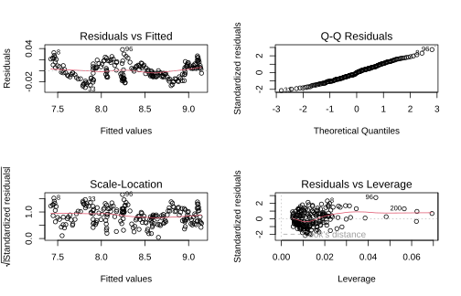
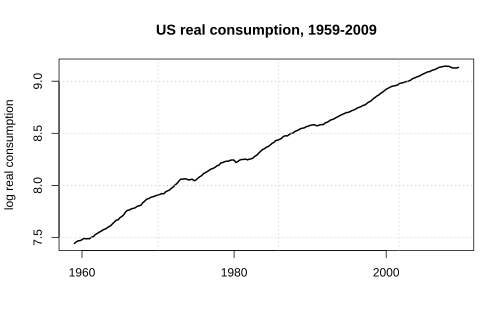
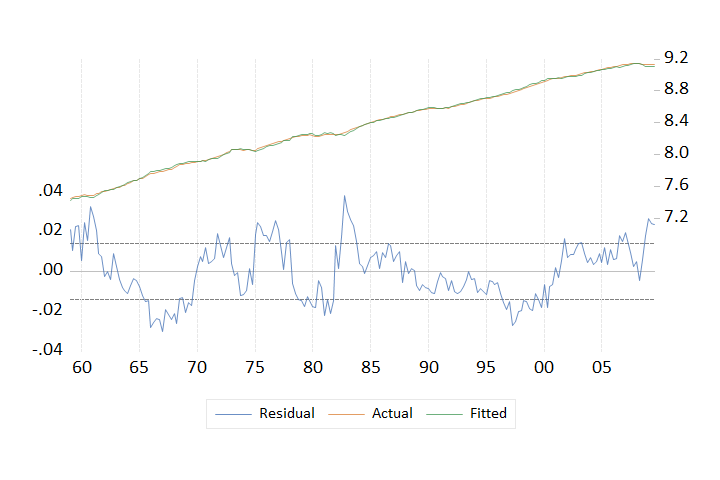
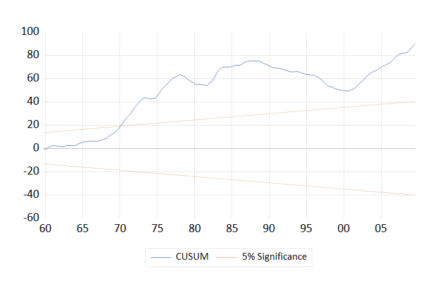
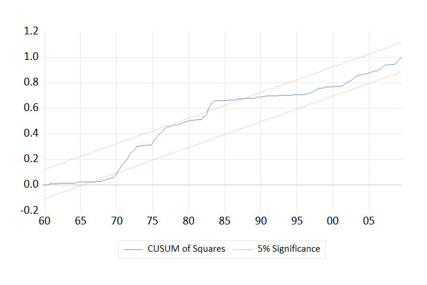
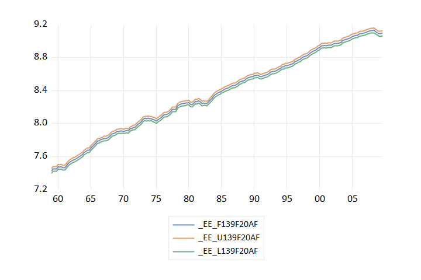
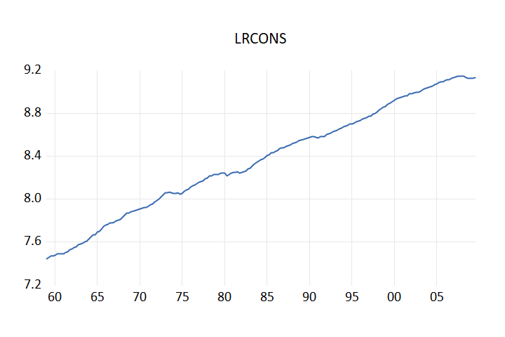
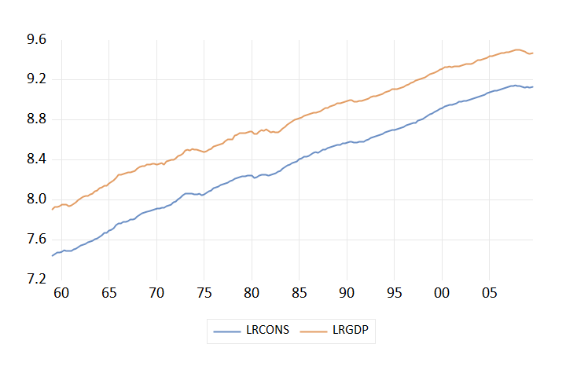

One Notebook. Multiple Econometric Engines.
One dataset, one kernel, four programs. No CSV round-trip, no switching windows, and results you can compare side by side — with the differences explained instead of hidden.
Why this exists
An applied econometrics paper rarely lives in one program. The unit-root test is in EViews because that is where the output is readable. The panel estimator is in Stata. The plots are in R. The data cleaning is in Python. So the working day looks like this:
Four windows, four copies of the same data slowly drifting
apart. A missing value that meant .a in Stata arrives as an empty
cell in R. A quarterly index becomes a string. And when a referee asks why
your robust standard error differs from theirs, there is no way to answer
without redoing the chain by hand.
From zero
This assumes a computer with nothing installed. If you already have Python and Jupyter, jump to step 3 — that is the only required one.
Download from python.org. On the first installer screen, tick “Add python.exe to PATH” — the single most commonly missed step.
python --version
Or, if you prefer conda:
conda create -n econ python=3.12 conda activate econ
pip install jupyterlab
jupyter lab
This is the only step that is required. It installs pandas, numpy, IPython and statsmodels, and nothing commercial.
pip install econenv
From inside a notebook cell, use this form instead — it installs into the kernel actually running, rather than whichever Python happens to be first on your PATH:
%pip install econenv
pip install "econenv[eviews]" # comtypes, for EViews on Windows pip install "econenv[arrow]" # faster data transfer to R pip install "econenv[all]"
Install from CRAN and accept
the defaults. Nothing else is needed: EconEnv searches the registry and
the usual install locations, so you do not have to set R_HOME
or touch PATH.
Rterm child
process — no compiler, no wheels to hunt for. rpy2 publishes no Windows
wheels, so pip install rpy2 usually leaves a broken build.You need Stata 17 or newer, because that is when StataCorp began shipping PyStata. Install and licence it normally; EconEnv finds it, validates the executable and detects the edition (BE, SE or MP).
%econ config stata.home "C:/Program Files/StataNow19" %econ config stata.edition mp
Install and licence EViews, then open it once by hand and close it. That registers its COM automation server; until you have done it, automation cannot connect.
pip install "econenv[eviews]"
%econ config eviews.progid EViews.Manager.14.
Note the format: EViews.Manager.14, not
EViews14.Manager.Verify
Load the extension once per notebook. It reports which magics it registered and, importantly, who owns each one.
notebook%load_ext econenvreal output
EconEnv 1.1.0 loaded — one notebook, multiple econometric engines. %econ econenv %Rec / %%Rec econenv %R / %%R econenv (rpy2 not installed) %eviews / %%eviews econenv %stata / %%stata pystata (official) %econ status · %econ doctor · %econ help
%%stata belongs to StataCorp, not to EconEnv — Stata 17+ ships
official IPython magics and EconEnv loads those rather than writing worse
ones. It therefore takes Stata's options, not EconEnv's.%econ statusreal output
state version edition backend \
engine
Python configured 3.11.0 cpython
EViews configured 13 comtypes
MATLAB configured R2024a matlab.engine
R configured 4.5.2 subprocess
Stata running 19.5 mp pystata
location
engine
Python C:\Users\HP\AppData\Local\Programs\Python\Pyth...
EViews C:\Program Files\EViews 13
...
%econ doctor checks every layer — Python, Jupyter,
R, Stata, EViews, COM, temp directories, permissions — and every warning or
error carries a suggested fix. That is enforced by a test.
%econ doctor
Reference
Line magics start with % and act on one line. Cell
magics start with %% and take the whole cell.
%econ — managing everything| Command | What it does |
|---|---|
%econ status | Table of every engine: state, version, edition, backend, location |
%econ engines | The same in detail, with each engine's capabilities |
%econ doctor | Full diagnosis of every layer, with a fix for each problem |
%econ versions | Version of EconEnv and of each engine |
%econ capabilities | What each engine can actually do on this machine |
%econ models | Estimator × engine matrix — what is supported where |
%econ start r | Start an engine explicitly (they start on first use anyway) |
%econ stop · restart · reset | Session control |
%econ config r.home "..." | Show or set a configuration value |
%econ push <engine> <name> | Send a Python object to an engine |
%econ pull <engine> [name] | Fetch an object back into Python |
%econ move <from> <to> <name> | Move data engine to engine, no file |
%econ snapshot | Reproducibility snapshot of every version involved |
%econ eviews [topic] | Look up EViews commands without leaving the notebook |
%econ ols y ~ x | Run one OLS across every available engine |
%%R / %%Rec%%R -i df -o results fit <- lm(y ~ x1 + x2, data = df) results <- coef(fit)
-i NAME | send a Python object in |
-o NAME | bring an R object back |
-q | suppress output |
--no-graphics | do not capture plots |
-r | return the result object |
If rpy2 is
installed, EconEnv loads rpy2's own %R rather than
shadowing it; its own stay available as %Rec.
%%stata%econ push stata df
%%stata regress y x1 x2, robust estat ic
%%stata --result is
a syntax error. Move data with %econ push /
%econ pull. Type %%stata? for its own help.%%eviews%%eviews -i df equation eq1.ls y c x1 x2 eq1.output line y
-i NAME | push a DataFrame in as a workfile |
-o NAME | pull a series back out |
-p PAGE | select a workfile page |
--no-graphs | suppress figures |
--result | return the result object |
import econenv
econenv.push("r", "df", df)
econenv.pull("stata")
econenv.move("stata", "eviews", "mydata")
econenv.compare_ols(df, "y ~ x1 + x2")
econenv.doctor()
econenv.snapshot()
Everything the magics do is
available as plain Python, so scripts and the econenv
command-line tool share exactly one implementation.
Real data, real output
Everything below is genuine output from the example notebook, executed against R 4.5.2, StataNow 19.5 MP and EViews 13. The data is real US quarterly macroeconomic data, 1959Q1–2009Q3 (203 observations), shipped with statsmodels — so the notebook needs no download and no private file.
import numpy as np, pandas as pd, statsmodels.api as sm, econenv
raw = sm.datasets.macrodata.load_pandas().data
idx = pd.PeriodIndex(year=raw.year.astype(int),
quarter=raw.quarter.astype(int), freq='Q').to_timestamp()
macro = pd.DataFrame({
'lrgdp': np.log(raw.realgdp.values),
'lrcons': np.log(raw.realcons.values),
'realint': raw.realint.values,
}, index=idx)
real output
lrgdp lrcons lrinv unemp infl tbill realint count 203.000 203.000 203.000 203.000 203.000 203.000 203.000 mean 8.781 8.362 6.750 5.885 3.961 5.312 1.337 std 0.466 0.501 0.596 1.459 3.253 2.803 2.669 min 7.905 7.443 5.560 3.400 -8.790 0.120 -6.790 25% 8.398 7.963 6.252 4.900 2.270 3.515 -0.085 50% 8.789 8.366 6.798 5.700 3.240 5.010 1.340 75% 9.173 8.764 7.270 6.800 4.975 6.665 2.630 max 9.504 9.145 7.725 10.700 14.620 15.330 10.950
DatetimeIndex is what lets EViews create a
dated workfile page. Without it EViews treats the observations as
unordered and every time-series test below becomes meaningless.%%R -i macro fit_r <- lm(lrcons ~ lrgdp + realint, data = macro) summary(fit_r)real output
Call:
lm(formula = lrcons ~ lrgdp + realint, data = macro)
Residuals:
Min 1Q Median 3Q Max
-0.030434 -0.011066 -0.000498 0.009559 0.038223
Coefficients:
Estimate Std. Error t value Pr(>|t|)
(Intercept) -1.0735725 0.0189306 -56.711 < 2e-16 ***
lrgdp 1.0746806 0.0021514 499.527 < 2e-16 ***
realint -0.0010893 0.0003754 -2.902 0.00412 **
---
Signif. codes: 0 '***' 0.001 '**' 0.01 '*' 0.05 '.' 0.1 ' ' 1
Residual standard error: 0.01424 on 200 degrees of freedom
Multiple R-squared: 0.9992, Adjusted R-squared: 0.9992
F-statistic: 1.248e+05 on 2 and 200 DF, p-value: < 2.2e-16
R's four-panel diagnostic view, rendered straight into the notebook:

par(mfrow = c(2, 2)); plot(fit_r) — captured from R and displayed inline
Those residuals are strongly autocorrelated, so ordinary
standard errors are too small. newey is Stata's reference
implementation of Newey–West.
%econ push stata macro
%%stata tsset t newey lrcons lrgdp realint, lag(4)real output
. gen t = _n
. tsset t
Time variable: t, 1 to 203
Delta: 1 unit
. newey lrcons lrgdp realint, lag(4)
%%eviews -i macro lrgdp.uroot(adf)real output
Null Hypothesis: LRGDP has a unit root
Exogenous: Constant
Lag Length: 1 (Automatic - based on SIC, maxlag=14)
t-Statistic Prob.*
Augmented Dickey-Fuller test statistic -1.820451 0.3698
Test critical values: 1% level -3.462901
5% level -2.875752
10% level -2.574423
*MacKinnon (1996) one-sided p-values.
...
Log real GDP fails to reject a unit root — exactly as it should on trending macro data. Next, whether the two series move together in the long run:
%%eviews group gci lrcons lrgdp gci.coint(e)real output
Johansen Cointegration Test
=================================================================
Date: 09/05/26 Time: 07:07
Sample: 1959Q1 2009Q3
Included observations: 203
Lags interval (in first differences): 1 to 4
Endogenous variables: LRCONS LRGDP
Deterministic assumptions: Case 5 (Johansen-Hendry-Juselius): Both the
cointegrating relationship and short-run dynamics include a constan
trend.
=================================================================
=================================================================
Unrestricted Cointegration Rank Test (Trace)
=================================================================
Hypothesized Trace 0.05 Prob.**
...
%%eviews equation eq_ev.ls lrcons c lrgdp realint eq_ev.outputreal output
Dependent Variable: LRCONS Method: Least Squares Date: 09/05/26 Time: 07:07 Sample: 1959Q1 2009Q3 Included observations: 203 Variable Coefficient Std. Error t-Statistic Prob. C -1.073573 0.018931 -56.71091 0.0000 LRGDP 1.074681 0.002151 499.5275 0.0000 REALINT -0.001089 0.000375 -2.902182 0.0041 R-squared 0.999199 Mean dependent var 8.361722 Adjusted R-squared 0.999191 S.D. dependent var 0.500639 S.E. of regression 0.014236 Akaike info criterion -5.651383 Sum squared resid 0.040534 Schwarz criterion -5.602419 Log likelihood 576.6154 Hannan-Quinn criter. -5.631574 F-statistic 124805.2 Durbin-Watson stat 0.278552 ...

eq_ev.resids — actual, fitted, residual
eq_ev.rls(q) — CUSUM test for parameter stability
eq_ev.rls(v) — CUSUM of squares
eq_fc.forecast(g) — forecast ± 2 s.e.
line lrcons — the command form
gplot.line — two series on one graphThe part that is hard to do any other way
One specification, four programs, one table — and an honest account of where they differ.
Pythoneconenv.compare_ols(macro, "lrcons ~ lrgdp + realint")real output
C:\Users\HP\Documents\econenv\src\econenv\engines\stata_engine.py:356: UserWarning: EconEnv push -> stata: [warning] date: datetime converted to Stata %tc (ms since 1960-01-01); apply `format ... %tc` in Stata to display it as a date push_frame(self, "__econenv_ols", data.loc[:, columns], clear=True)
statsmodels uses −2ℓ + 2k; R counts σ² as a parameter, so k+1;
EViews divides by n; Stata takes them from estat ic with
k = e(rank) + 1. None is wrong — they answer slightly different questions, and
EconEnv reports the reason rather than silently picking one.For researchers who click
In EViews you normally click. In a notebook there is nothing to click, and that — not any missing feature — is the real obstacle. So the command reference lives inside the notebook, where the question gets asked.
%econ eviews # the list of tasks %econ eviews graph # everything about plotting %econ eviews find cointegration # search all of itreal output
✓ g.coint(e)
Johansen system cointegration test — trace and maximum-eigenvalue
statistics for how many cointegrating relations exist.
GUI: Group > View > Cointegration Test > Johansen
e.g. g1.coint(e)
136 commands, 94 verified against EViews 13. Each entry gives the menu path you already know, the command, what it does, and a line to copy.
EViews objects work as
object_name.what_you_want. Anything in an object's View
menu is object.thatview; anything in Proc is
object.thatproc. That single rule covers most of the language.
| You would click | Command | What it does |
|---|---|---|
| File → New → Workfile | wfcreate q 1990Q1 2020Q4 | Quarterly workfile |
| Quick → Generate Series | series ly = log(y) | Create or transform |
| Quick → Sample | smpl 1995Q1 2015Q4 | Restrict the sample |
| Series → View → Graph → Line | x.line | Plot a series |
| Descriptive Statistics | x.stats | Summary table |
| Correlogram | x.correl | ACF/PACF with Q-statistics |
| Unit Root Test → ADF | x.uroot(adf) | Augmented Dickey–Fuller |
| Cointegration → Johansen | g1.coint(e) | Trace and max-eigenvalue |
| Estimate Equation → LS | equation eq1.ls y c x | OLS; c is the constant |
| Estimate Equation → ARCH | equation eq1.arch(1,1) y c x | GARCH(1,1) |
| Estimate VAR | var v1.ls 1 2 x y | VAR, lags 1 to 2 |
| View → Estimation Output | eq1.output | The results table |
| Actual, Fitted, Residual | eq1.resids | The first thing to look at |
| Serial Correlation LM | eq1.auto(2) | Breusch–Godfrey |
| Heteroskedasticity → White | eq1.white | White's test |
| Recursive → CUSUM | eq1.rls(q) | Parameter stability |
| Recursive → CUSUM squares | eq1.rls(v) | Variance stability |
| Forecast | eq1.forecast(g) yf | Forecast and plot |
All three work, and the GUI hides the distinction:
line x ' command form — quickest x.line ' view form — matches the View menu graph gr1.line x ' object form — keeps the graph so you can edit it
No installation at all
One line, no local setup — but only for two of the four engines, and the reason is worth stating plainly rather than leaving you to discover it.
%pip install econenv
| Engine | On Colab | Why |
|---|---|---|
| Python | works | it is the kernel |
| R | works | R is already on the Colab image |
| Stata | possible | Stata for Linux exists and pystata supports it — install it from Google Drive if you hold a Linux licence |
| EViews | no | no Linux build; Wine cannot licence it; and EViews forbids remote access |
There is a way round every limitation above, and it is Google's own feature: connect Colab to a local runtime. Colab already runs in a browser on your PC — point it at a Jupyter server on that same PC and the interface stays Colab while the kernel, and every engine, is your Windows machine.
Nothing is exposed to the internet: your browser talks to
localhost, Google's servers never reach your machine, and EViews
is driven by local COM exactly as in a local notebook.
python -m venv colab-runtime colab-runtime/Scripts/pip install "notebook==6.4.12" jupyter_http_over_ws econenv
colab-runtime/Scripts/jupyter serverextension enable --py jupyter_http_over_ws
colab-runtime/Scripts/jupyter notebook --no-browser --port=8888 --NotebookApp.port_retries=0 --NotebookApp.allow_origin="https://colab.research.google.com"
Copy the http://localhost:8888/?token=… line, then
in Colab click the Connect arrow and choose Connect to a local
runtime.
jupyter_http_over_ws was last released in March 2020 and is a
notebook 5/6 server extension. On notebook 7 and jupyter_server 2 it does not
load — enabling it fails and /http_over_websocket returns 404.
Pinned to notebook==6.4.12 the same probe returns HTTP 400, which
is the endpoint waiting for Colab's websocket upgrade. Hence the separate
environment.When something goes wrong
ModuleNotFoundError: No module named 'econenv'
Almost always: Jupyter runs a different Python from the one you installed into. Check, then install into exactly that interpreter:
import sys; print(sys.executable)
!{sys.executable} -m pip install econenv
%econ doctor
Every failing check names a fix. Usually:
pip install "econenv[eviews]"r.homeWith several versions installed, the generic identifier binds to
whichever registered last. %econ status always shows the one
actually connected. Pin it:
%econ config eviews.progid EViews.Manager.14
ImportError: cannot import name 'SexpVectorCCompatibleAbstract'
A build for an older Python. PyPI has no Windows wheels, so pip cannot fix it:
pip uninstall -y rpy2 conda install -c conda-forge rpy2
conda-forge's rpy2 brings its own R, separate from any you have. Unless you need rpy2, stay on the subprocess backend.